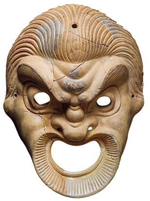

ПРО ТЕАТР





Театр начинается в Древней Греции, когда Феспис, путешествующий со своим хором, решается примерить на себя роль Бога и ответить хору. Именно так появляется привычный нам театр с актерами, которые играют роли.

Однако перед появлением классического театра, люди воспевают богов и полу богов, придумывают бытовые истории, которые будут понятны любому, но все же связаны с чем-то божественным. Так, постепенно появляется разделение на комедию и трагедию.